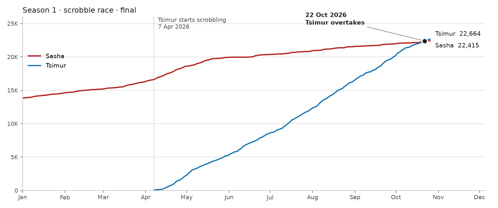

да ради Бога
мне не жалко
| Tsimur | Sasha | |
|---|---|---|
| кто кого подсадилartists the other got hooked on | 19 | 47 |
| эхоtracks the other picked up | 136 | 88 |
| территорииcontested artists owned, last 30 days | 8 | 20 |

An artist counts when one of us started playing it within 30 days after the other played it, and then played it at least 3 times.
- Tsimur got Sasha hooked on 19 artists — the biggest one: John Maus (127 plays since 17 Jul).
- Sasha got Tsimur hooked on 47 artists — the biggest one: CUPSIZE (3097 plays since 7 Jun).
| hooked on | artist | who → whom | plays since | after |
|---|---|---|---|---|
| 11 Nov | Рыцарь Диких Яблок | Sasha → Tsimur | 4 | 20 min |
| 2 Nov | emosl4t696 | Tsimur → Sasha | 15 | 5 h |
| 26 Oct | noch` | Tsimur → Sasha | 3 | 3 min |
| 22 Oct | ear | Tsimur → Sasha | 7 | 1 min |
| 19 Oct | Gurriers | Tsimur → Sasha | 3 | 24 h |
| 21 Sep | Grimes | Sasha → Tsimur | 3 | 7 days |
| 2 Sep | superkomfort | Sasha → Tsimur | 227 | 15 h |
| 2 Sep | Future Nobodies | Sasha → Tsimur | 30 | 23 days |
| 25 Aug | Niko B | Sasha → Tsimur | 5 | 48 min |
| 20 Aug | Saša Ogorodnikov | Sasha → Tsimur | 50 | 4 min |
| 9 Aug | Восточный Пляж | Tsimur → Sasha | 13 | 3 days |
| 9 Aug | serdechko | Sasha → Tsimur | 7 | 26 days |
A track counts when one of us starts playing it (first time in 30+ days) within 72 hours after the other started it. Who is the household DJ?
- Sasha picked up 136 tracks from Tsimur, usually after 11 h.
- Tsimur picked up 88 tracks from Sasha, usually after 13 h.
- 250 tracks were scrobbled on both accounts at the same moment (within 15 min) — that's listening together, not an echo.
| date | track | from → to | after |
|---|---|---|---|
| 11 Nov | Маяк — Рыцарь Диких Яблок | Sasha → Tsimur | 20 min |
| 9 Nov | Glassworks: I. Opening — Philip Glass | Sasha → Tsimur | 7 h |
| 4 Nov | Char — Crystal Castles | Tsimur → Sasha | 24 h |
| 2 Nov | нетнаркотикамдасвегу — emosl4t696 | Tsimur → Sasha | 5 h |
| 2 Nov | MOG MOG MOG — emosl4t696 | Tsimur → Sasha | 5 h |
| 2 Nov | делай грязь — emosl4t696 | Tsimur → Sasha | 5 h |
| 2 Nov | милый пушистый котик — emosl4t696 | Tsimur → Sasha | 5 h |
| 2 Nov | пчелёнок — emosl4t696 | Tsimur → Sasha | 5 h |
| 2 Nov | абонент не отвечает — emosl4t696 | Tsimur → Sasha | 5 h |
| 2 Nov | это хУево ваще — emosl4t696 | Tsimur → Sasha | 5 h |
| 2 Nov | малютка — emosl4t696 | Tsimur → Sasha | 5 h |
| 2 Nov | координация потеряна — emosl4t696 | Tsimur → Sasha | 5 h |
Every artist you both play is a territory. It belongs to whoever gives it a bigger share of their own listening, so listening more doesn't win the map.
28 artists you both played at least 2 times in the last 30 days. Tsimur owns 8, Sasha owns 20.
This week
- Sasha took Crystal Castles from Tsimur
- Sasha took Molly Nilsson from Tsimur
- new contested artists: Philip Glass, Interpol, Рыцарь Диких Яблок
Not on the map (only one of you plays them): 157 artists only Tsimur, 14 only Sasha.
Tsimur started scrobbling on 7 Apr 2026, 16,567 scrobbles behind. At 112 a day against Sasha's 29, Tsimur caught up on 22 Oct 2026.

How the rules work
Both of us are tracked from 7 Apr. The first 30 days are a warm-up: a "first play" in that month might just be an old favourite that hadn't been scrobbled yet, so conversions and echoes count from 7 May.
кто кого подсадил: the follower's first-ever play of the artist comes after the leader played it in the previous 30 days; the follower then plays it at least 3 times. If we both found the artist in the same 15 minutes, nobody gets the point.
эхо: a "start" is a play of a track you haven't played in 30 days. The listener's start must come 15 minutes to 72 hours after the DJ's start. Both sides must be starts, so a track one of us loops every day doesn't make that person the DJ whenever the other plays it.
территории: last 30 days only, artists both played at least 2 times. Owner = higher percentage of their own scrobbles. "This week" compares with the map from 7 days ago.
Artist names ignore case and "feat." parts. Days are counted in Minsk time.
last updated: 2026-11-11 13:28